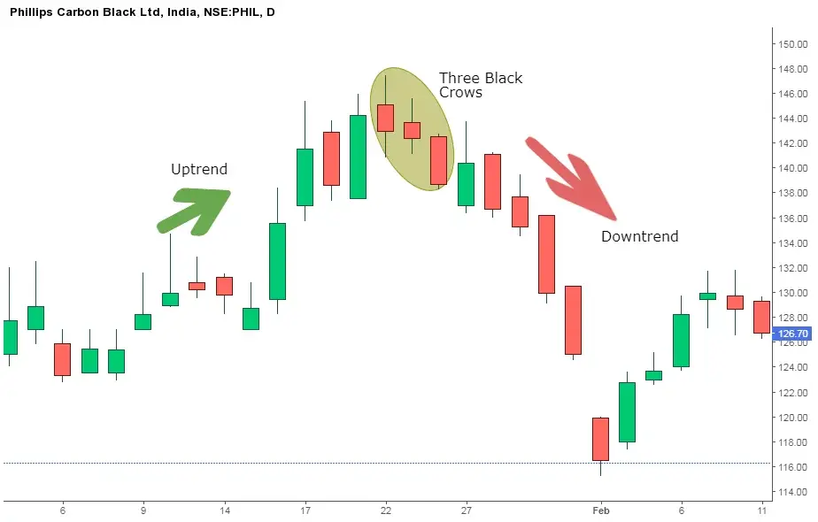
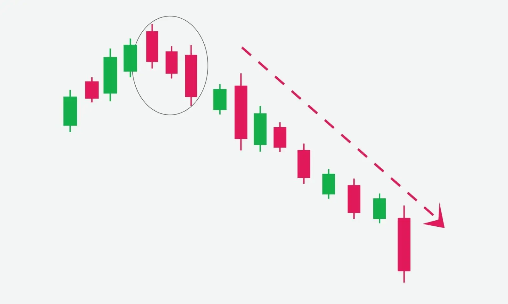

Three Crows pattern is a multiple candlestick chart pattern that is used to predict reversal to the downtrend.
This candlestick pattern is formed when the bearish forces come into the action and make the prices fall for three consecutive days.
Traders should take a short position after this bearish candlestick pattern is formed.
Traders can also take the help of volume and technical indicators to confirm the formation of this candlestick pattern.
| Formation of Three Black Crows: |

| How to trade with this Three Black Crows Pattern ? |
1st Candle:
The first candlestick of this pattern should be long bodied bearish candlestick and must be formed as the continuation of the ongoing uptrend.
A bearish candle means that the closing price should be lower than the opening price as the bears are trying to make the prices fall.
2nd Candle:
The second candlestick should also be a bearish candle. It can be long or short bodied.
The opening price of this candlestick should lie within the real body of the first candlestick i.e should be in between the midpoint or the closing of the first candle.
The second candle should not break the high of the first candlestick.
3rd Candle:
The third candlestick should also be a bearish candle. It can either be a long or short-bodied candle.
The opening price of this candlestick should lie within the real body of the second candlestick i.e should be the midpoint or the closing of the second candle.
The third candle should not break the high of the second candlestick.
One should note that these three candlesticks can be Bearish Marubozu.
A Bearish Marubozu candlestick pattern is a long-bodied bearish candlestick in which the closing price is the low price and the opening price is the high price for that day.
There are no shadows in the Bearish Marubozu.
| Example: |
Below is an example of daily chart of Phillips Carbon Black Ltd. that shows us how Three Black Crows Candlestick pattern is formed after an uptrend and the trend got reversed to downtrend after the formation of candlestick pattern.

| Key Points: |
